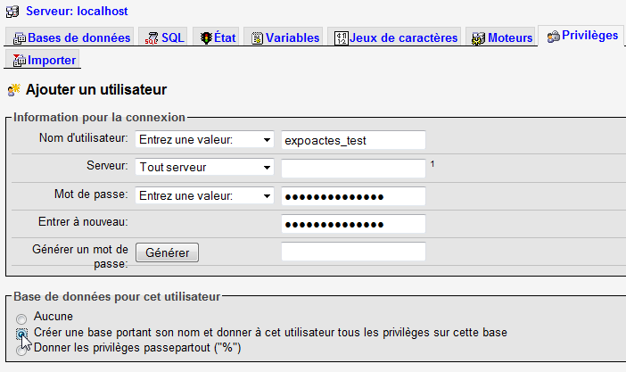

Pour ceux qui comptent personnaliser le logiciel de façon plus importantes (modification de la feuille de style, modification des programmes, ...), il peut être intéressant de tester ExpoActes en lode local (c'est à dire sur votre ordinateur) avant
de le mettre en place sur un site Internet.
Cette opération n'est absolument pas indispensable si vous comptez utiliser le logiciel tel qu'il est livré. Vous pourrez de toute façon le personnaliser avec les multiples paramètres proposés.
Pour cela les logiciels EasyPHP ou WampServer sont très pratiques car ils installent et configurent
automatiquement sur votre PC un petit serveur web local (Apache) et tout l'environnement
PHP et MySQL nécessaire au test de ExpoActes (et de tout autre application
PHP - MySQL).
L'installation avec EasyPHP se passe à peu près comme une installation
sur un hébergement mais avec quelques différences.
Les étapes pour une installation locale sont les suivantes :
NB : Si par la suite, le site local est destiné à être
transféré sur un hébergement externe, il est judicieux
d'utiliser les mêmes paramètres de base de données (nom,
login, utilisateur) que ceux qui seront utilisés sur le site public.
Lancer si ce n'est fait EasyPHP. Par un clic droit sur le " e" de la barre des tâches, activer "Administration".
Dans la page "Administration", cliquez sur le lien vers "Gestion BDD" qui lance le programme d'administration de la base de données PhpMyAdmin.
Lancer si ce n'est fait WampServer. Par un clic gauche sur le cadran de la barre des tâches, puis dans le panneau proposé, cliquez sur le lien vers "phpmyadmon" qui lance le programme d'administration de la base de données.
La méthode la plus simple consiste à créer immédiatement un nouvel utilisateur et une base avec le même nom en utilisant le nom par défaut créé par expoactes à savoir "expoactes_TEST".
Pour cela, sélectionnez l'onglet "Privilèges" et cliquez sur "Ajouter un utilisateur" puis tapez "expoactes" dans les zones nom d'utilisateur et deux fois dans Mot de passe. (NB : ne plus utiliser "expoactes_test" qui pose parfois des problèmes)

Cliquez en bas sur la ligne "Créer une base portant son nom ..." et allez en bas de l'écran pour valider l'opération.
L'utilisateur et la base sont créés et associés l'un avec l'autre.
Cette tâche consiste à indiquer au serveur web (Apache) que le répertoire où ont été installés les fichiers est celui d'un site web local.
Vous devrez d onnez un nom pour l'alias du site. Ce nom ne peut compter ni espace ni lettre accentuée. Il est préférable de ne mettre que des minuscules. Vous devrez aussi donner le chemin d'accès Windows au fichiers .php du site.
Dans la zone "Apache" de la page "Administration" de EasyPHP, vous avez la liste des sites web locaux. Chacun est identifié par un "alias". Vous devez en créer un nouveau avec le lien "Ajouter". Il faut alors préciser dans le formulaire proposé le nom d'alias et le chein d'accès Windows. Cliquez sur Ok. Le site est créé.
Sélectionnez "Apache" de le panneau d'administration" de WampServer, puis "Répertoires alias" et enfin "+ Ajouter un alias". Une fenêtre en mode texte s'ouvre alors automatiquepment. Il faut d'abord taper le nom du site (par exemple "expoactes") et valider. Il faut ensuite préciser le chemin d'accès aux fichiers.
N'oubliez pas que ExpoActes n'est pas dans le répertoire principal du site mais dans le sous répertoire actes. Cette disposition est prévue pour vous permettre d'ajouter une page d'accueil principale pour votre site.
Si le nom de votre site est "EXPOACTES", l'URL à taper dans le navigateur est alors :
http://127.0.0.1/EXPOACTES/actes/
Les codes d'accès donnés lors de la procédure d'installation sont automatiquement rangés dans le fichier connect.inc.php localisé dans le répertoire _config.
Si vous avez choisi "expoactes_TEST" comme conseillé, il n'y a riend 'autre à faire. Sinon, il faut modifier les codes qui sont structurés de la manière suivante dans le fichier coonect.inc.php:
if ($_SERVER['SERVER_ADDR']<>'127.0.0.1')
{
// Paramètres d'accès à la base de données CHEZ VOTRE HEBERGEUR
$dbaddr = "...."; // Adresse du serveur DISTANT
$dbname = "...."; // Nom de la base
$dbuser = "...."; // Login MySQL
$dbpass = "...."; // Mot de passe
}
else
{
// Paramètres d'accès à la base de données locale (facultatif)
$dbaddr = "localhost"; // Adresse du serveur LOCAL
$dbname = "expoactes_TEST"; // Nom de la base
$dbuser = "expoactes_TEST"; // Login MySQL
$dbpass = "expoactes_TEST"; // Mot de passe
}
Il convient bien entendu de remplacer les "expoactes_TEST" par les codes adaptés à vos bases de données.